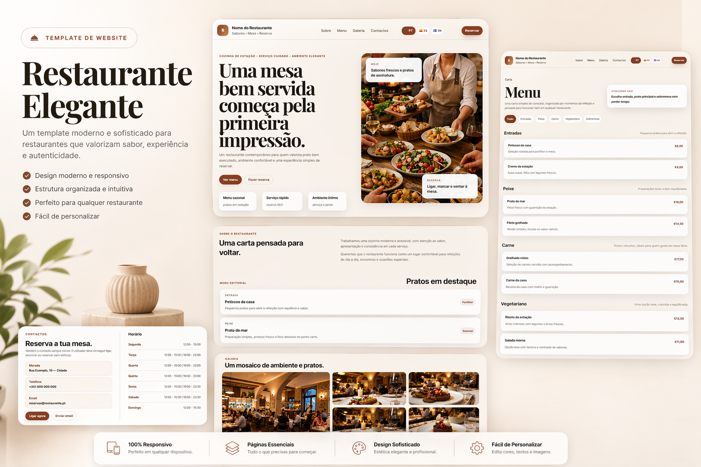

Objetivo
Converter visitantes em clientes com uma experiencia visual apelativa e uma estrutura orientada para acao.
Case Study
Projeto focado em criar uma primeira impressao forte para um restaurante, com imagem de marca elegante, chamadas para reserva e navegacao simples em qualquer dispositivo.

Converter visitantes em clientes com uma experiencia visual apelativa e uma estrutura orientada para acao.
Menu organizado, secoes de ambiente e CTA de reserva em pontos estrategicos da pagina.